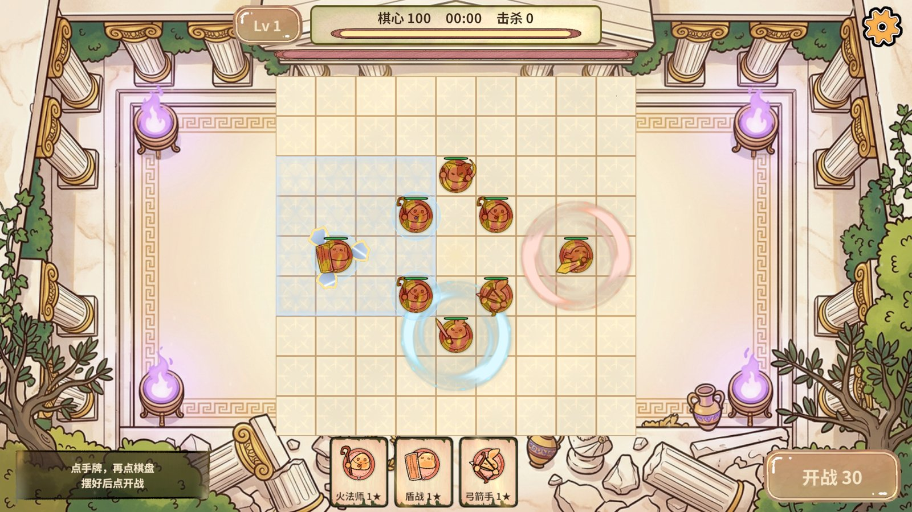
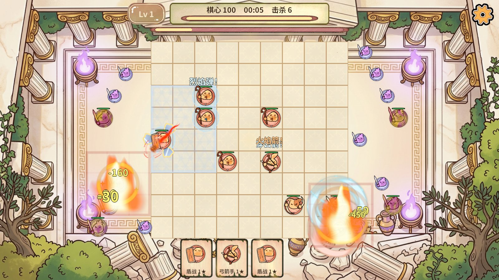
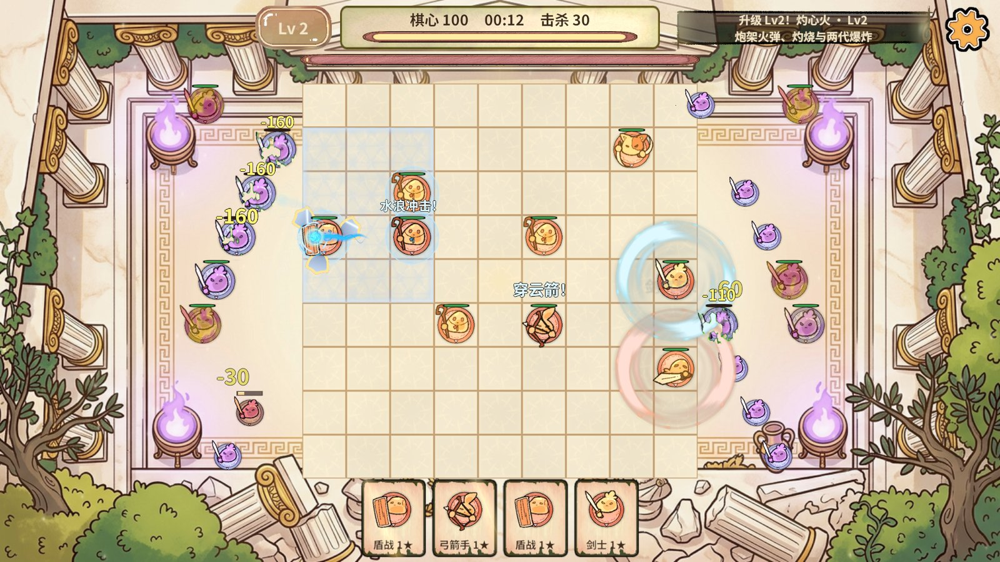
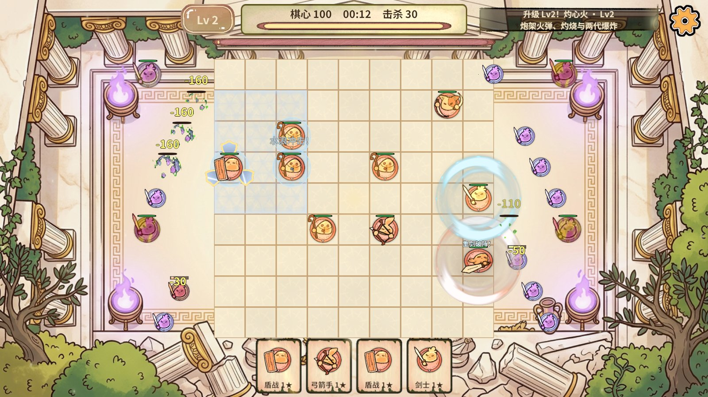
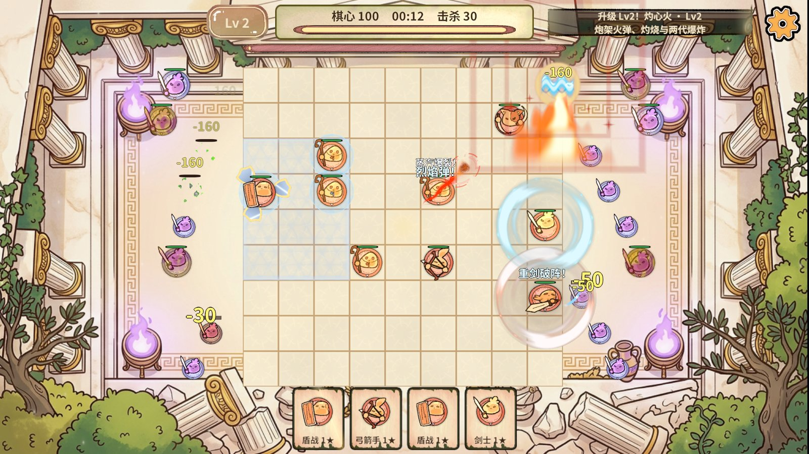
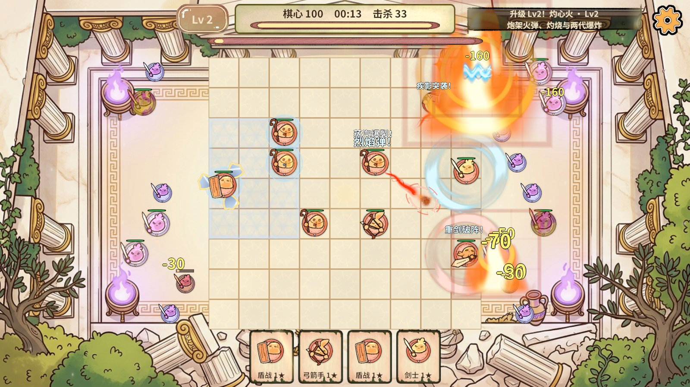
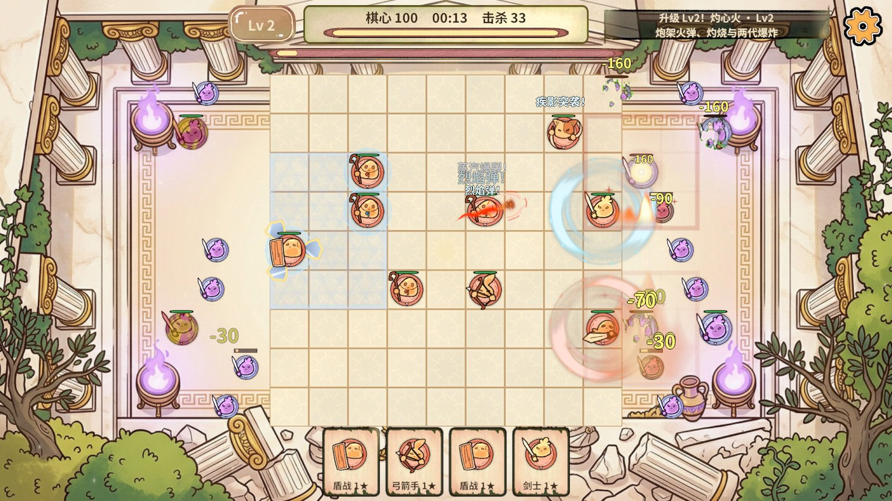
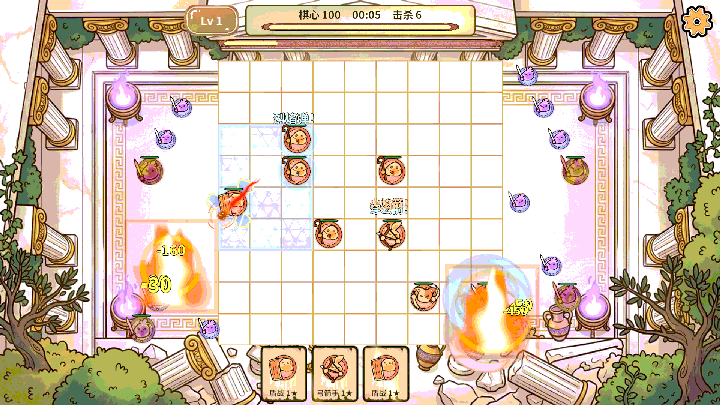

适用范围：本次自动化运行。结论只由断言决定；图片只能证明当时画面，不能替代数值断言。
1. 概览
| 报告目录 | G:\RevRoot\MyRevGame\RevGame_Client\文档\进度同步\无尽第三轮_不停顿交互与盾战刺客验收_2026-11-02 |
|---|---|
| 截图数量 | 7 |
| 动图数量 | 1 |
2. 指标
| 结论 | 通过（Editor + 真实PC AB；手机/真机未测） |
|---|---|
| 规则夹具 | rules 13/13 · extended-rules 27/27 · boss-rules 66/66 · guard-rules 16/16 |
| 战斗中放牌/移动 | 选牌、落子、点选己方棋子、移动全部接受，阶段始终 Fighting |
| 自动补牌 | 补满 4 张（CardRefillSeconds=5） |
| 自动升级 | Lv2 自动获得，横幅提示，不停顿 |
| 远程攻速 | 间隔 = 基础 0.4s ÷ (眼位攻速 × (1+3))，夹具按公式精确断言 |
| 智能驻守 | 4 枚近战分到 4 个不同的区；敌人最多的区优先分到守军（夹具） |
| 盾战 | 环绕盾牌 1 组、防御区并集可见；两块重叠区并集 23 格；区内伤害精确减半并写格挡回执（夹具） |
| 刺客 | 4 格直线贯穿、射程外不受伤（夹具）；实战突刺 4 次 |
| 14秒击杀 / 棋心 | 33 / 100 |
| 整帧 p95 / p99（Editor） | 3.83 ms / 9.24 ms |
| 服务 Tick 最大 | 2.30 ms |
| GC 计数 | 本计划在采样窗口内截图，GC 数值被截图污染不可引用；上一轮无截图干净采样为约 8.3 MB/s（Editor 整帧） |
| 未验证 | 实战中盾战护盾的格挡波动未被截到（14 秒内敌人没打到区内棋子），减伤与格挡回执由夹具验证 |
3. 截图







4. 动图
GIF 用来观察动态效果；单帧截图表达不了连招、位移与粒子节奏。

5. 说明
测试通道：RevMCP rev_run 计划（以 rev_mcp.py run 命令行形态执行）与 RevCLI 编辑器动作。性能为 Unity Editor 整帧，不代表手机。素材：Kenney Board Game Icons 盾牌剪影、Particle Pack 速度线（CC0）。